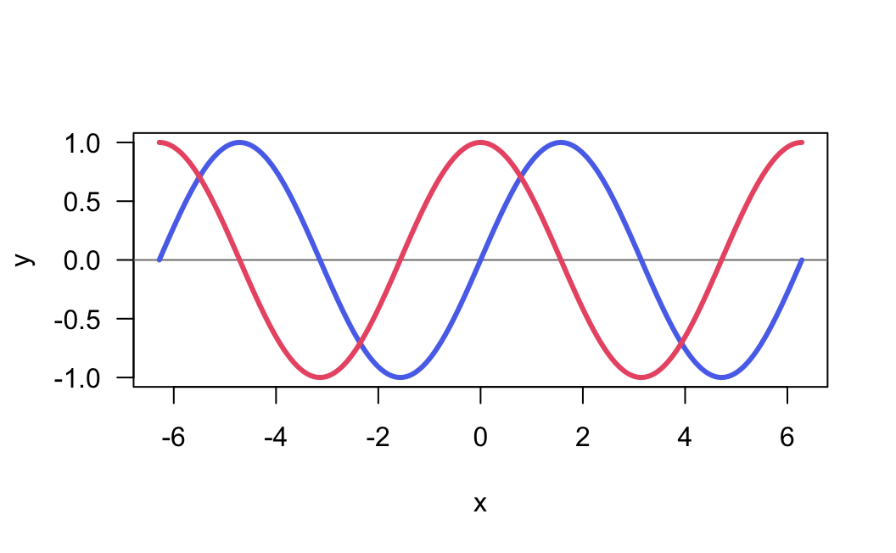

25 Exporting Data
One common task in most data analysis projects involves exporting data to external files.
Figure 25.1: Conceptual diagram illustrating some exporting resources
25.1 Exporting Tables
One common task in most data analysis projects involves exporting derived
data tables (e.g. clean data sets, or processed tables). To accomplish this
task you can use any of the write-table functions such as write.table(),
write.csv(), etc.
# blank separated (default)
write.table(mtcars, file = 'mtcars.txt', row.names = FALSE)
# tab-separated value
write.table(mtcars, file = 'mtcars.tsv', sep = "\t", row.names = FALSE)
# comma-separated value
write.csv(mtcars, file = 'mtcars.csv', row.names = FALSE)25.2 Exporting Text
Another type of data-exporting operation has to do with “unstructured” text, and text output in general. By “unstructured” I mean non-tabular data.
Consider the following piece of code, which writes the elements of a character
vector some_text, one element per line (via a file connection) to the file
mytext.txt in the local working directory:
# create a connection to a file
# (assuming output file in working directory)
txt <- file("mytext.txt")
# write contents to the file
writeLines(text = some_text, con = txt)Note: Calling file() just creates the connection object but it does not open
it. The function writeLines() is the one that opens the connection, writes
the content to the file mytext.txt, and then closes the connection on exiting.
The previous code can be compactly written with one command without the need
to explicitly use the connection function file() as follows:
# write contents to the file
writeLines(text = some_text, con = "mytext.txt")25.3 Sending output with cat()
You can use cat() to concatenate and print information to a file.
For instance, say you are interested in some descriptive statistics about
the column mpg (miles per gallon) from the mtcars data frame:
# summary statistics of mpg
min(mtcars$mpg)
max(mtcars$mpg)
median(mtcars$mpg)
mean(mtcars$mpg)
sd(mtcars$mpg)Suppose the goal is to generate a file mpg-statistics.txt with the following
contents:
Miles per Gallon Statistics
Minimum: 10.4
Maximum: 33.9
Median : 19.2
Mean : 20.09062
Std Dev: 6.026948How can this goal be achieved? We can create objects for all the summary
statistics, and then involke cat() as many times as there are lines of text
to be exported in the output file.
# summary statistics of mpg
mpg_min <- min(mtcars$mpg)
mpg_max <- max(mtcars$mpg)
mpg_med <- median(mtcars$mpg)
mpg_avg <- mean(mtcars$mpg)
mpg_sd <- sd(mtcars$mpg)
# name of output file
outfile <- "mpg-statistics.txt"
# first line of the file
cat("Miles per Gallon Statistics\n\n", file = outfile)
# subsequent lines appended to the output file
cat("Minimum:", mpg_min, "\n", file = outfile, append = TRUE)
cat("Maximum:", mpg_max, "\n", file = outfile, append = TRUE)
cat("Median :", mpg_med, "\n", file = outfile, append = TRUE)
cat("Mean :", mpg_avg, "\n", file = outfile, append = TRUE)
cat("Std Dev:", mpg_sd, "\n", file = outfile, append = TRUE)Notice that the first call to cat() exports the text that is supposed to be
in the first line of content in the output file outfile. The subsequent calls
to cat() use the argument append = TRUE so that the next lines of content
are appended to the existing outfile. If we don’t use append = TRUE, R will
override the existing contents in outfile.
25.3.1 Sending output with cat()
To make the content in "mpg-statistics.txt" look “prettier”, limiting the
number of decimals digits to just 2, you may consider using sprintf(). This
function allows you to print strings using C-style formatting.
cat("Miles per Gallon Statistics\n\n", file = outfile)
cat(sprintf("Minimum: %0.2f", mpg_min), "\n", file = outfile, append = TRUE)
cat(sprintf("Maximum: %0.2f", mpg_max), "\n", file = outfile, append = TRUE)
cat(sprintf("Median : %0.2f", mpg_med), "\n", file = outfile, append = TRUE)
cat(sprintf("Mean : %0.2f", mpg_avg), "\n", file = outfile, append = TRUE)
cat(sprintf("Std Dev: %0.2f", mpg_sd), "\n", file = outfile, append = TRUE)Look at the call of sprintf() in the second line: the one that prints the
minimum value of miles-per-gallon:
sprintf("Minimum: %0.2f", mpg_min)What does sprintf() do in this example? It takes the string "Minimum: %0.2f"
and the numeric value mpg_min. Observe that the provided string contains
some weird-looking characters: %0.2f. This set of characters have a meaning
and they are used as a place holder to be replaced with the formatted value
mpg_min. Specifically, the notation %0.2f indicates two decimal digits
of a double precision value. In other words, a numeric value 10.4 will be
printed using two decimal digits as: 10.40. Likewise, a number such as
20.09062 will be printed as 20.09. If you are curious about the various
types of C-style string formatting place-holders, check the documentation
of sprintf()
help(sprintf)25.4 Redirecting output with sink()
Another interesting function is sink(). This function is very useful when
you want to export R output as it is displayed in R’s console.
For example, consider the following output from summary() applied on three
columns of mtcars
summary(mtcars[ ,c('mpg', 'hp', 'cyl')])
> mpg hp cyl
> Min. :10.40 Min. : 52.0 Min. :4.000
> 1st Qu.:15.43 1st Qu.: 96.5 1st Qu.:4.000
> Median :19.20 Median :123.0 Median :6.000
> Mean :20.09 Mean :146.7 Mean :6.188
> 3rd Qu.:22.80 3rd Qu.:180.0 3rd Qu.:8.000
> Max. :33.90 Max. :335.0 Max. :8.000To be able to keep the same output displayed by R, you must use sink(). This
function will divert R output to the specified file.
# sink output
sink(file = "mtcars-stats.txt")
# summary statistics
summary(mtcars[ ,c('mpg', 'hp', 'cyl')])
# stops diverting output
sink()The use of sink() is a bit different from other data-exporting functions. As
you can tell from this example, we start by invoking sink() and specifying
the name of the output file. Then we include the commands whose outputs will
be redirected to the target file. In order to stop the redirecting mechanism,
we need to invoke sink() again, without specifying any arguments.
Consider one more example involving the use of sink() to send the output
from running a linear regression of mpg on hp with the function lm().
To make things more interesting, we will also export the results returned by
summary() on the regression object. And not only that; we will also run a
t-test between am and hp with t.test(), and export the results of such test.
# sink output
sink(file = "regression-output.txt")
# regression of mpg onto hp
reg = lm(mpg ~ hp, data = mtcars)
summary(reg)
# t-test
t.test(hp ~ am, data = mtcars)
# stop sinking process
sink()25.5 Exporting R’s Binary Data
R also allows you to save objects in R’s binary format with the functions
save() and save.image(). It is customary to use the RData extension for
the files created by save() and save.image(). You may also find
users specifying the old extension .rda or some other variation.
You can use save() to save specific objects from your current session.
For example, here is how to save the data frame mtcars3
mtcars3 = mtcars[ ,c('mpg', 'hp', 'cyl')]
save(mtcars3, file = 'mtcars3.RData')The difference between save() and save.image() is that the latter saves
all the objects in your current session. This is actually the function that is
run behind the scenes every time you quit R and accept to save the so-called
workspace image.
You can share mtcars3.RData with any other R user, regardless of the
operating system that they use. To read in binary R files, use load().
25.6 Exporting Images
In addition to exporting tables and/or a combination of text-numeric output in the form of several objects, another typical data-exporting activity involves saving graphics, and images in general.
R comes with a handful of functions to export graphics in various formats:
| Function | Description |
|---|---|
png() |
Portable Network Graphics |
jpeg() |
Joint Photographic Experts Group |
pdf() |
Portable Document Format |
bmp() |
Bitmap |
tiff() |
Tag Image File Format |
svg() |
Scalable Vector Graphics |
For example, say you have a plot like the following one:
x = 2*pi * seq(from = -1, to = 1, by = 0.01)
sin_x = sin(x)
cos_x = cos(x)
plot(x, sin_x, type = "n", las = 1, ylab = "y")
abline(h = 0, col = "gray50")
lines(x, sin_x, lwd = 3, col = "#5A73EB")
lines(x, cos_x, lwd = 3, col = "#eb5a73")
To export the graphic into a PNG image file, we use png() and dev.off()
png(file = "myplot.png", bg = "transparent")
plot(x, sin_x, type = "n", las = 1, ylab = "y")
abline(h = 0, col = "gray50")
lines(x, sin_x, lwd = 3, col = "#5A73EB")
lines(x, cos_x, lwd = 3, col = "#eb5a73")
dev.off()The usage of png() and friends is similar to sink(). By default, when
you use any of the graphing functions such as e.g. plot(), barplot(),
boxplot(), etc, the image is rendered in the graphics device that comes in
R (or RStudio). By using png(), the rendering mechanism is diverted into an
external file. This is why we need to use the function dev.off() to shut
down the device used when we are done exporting an image to an external file.